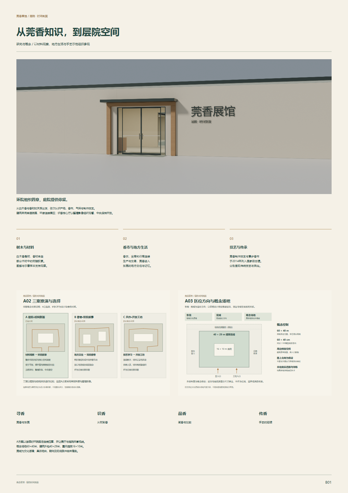
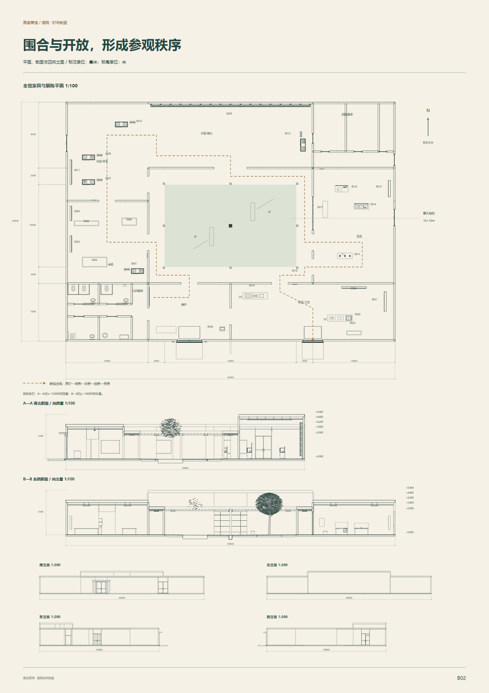
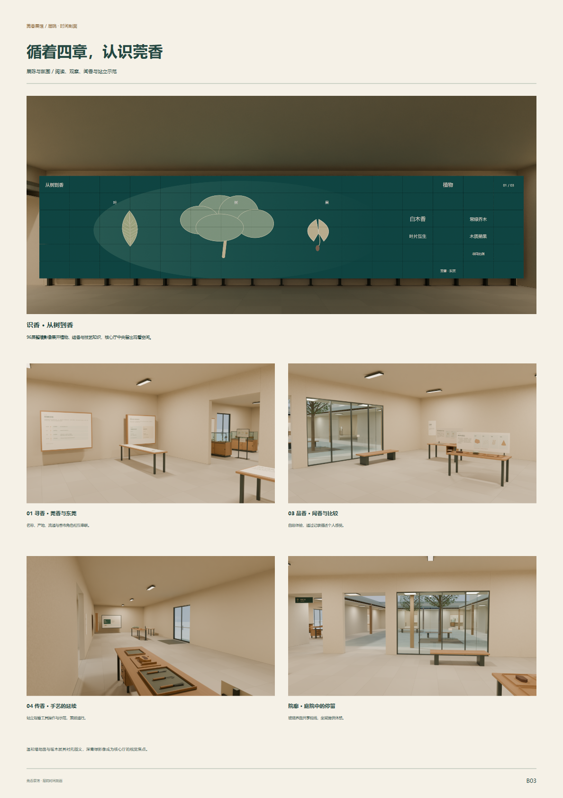
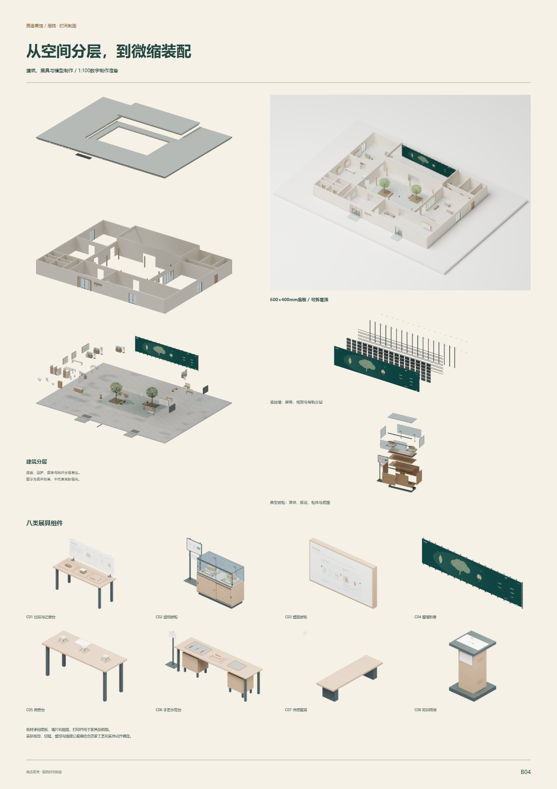

莞香展馆 / 方案A
围绕寻香、识香、品香、传香四章，查看建筑、展陈与微缩制作表达。
60秒 · 无声 · 中文标题
查看36页汇报PDF打开可编辑PPTX四张展板总览




建筑、四章展区、院廊、展柜细节与黄昏。
查看全部效果图
旋转浏览、24编号定位、四章筛选、去顶和分层。
打开交互模型
4块章节主板、24编号展签与服务牌、12幅独立插图。
查看全套图文
12类图纸、40张图纸页；合册含封面共41页。
查看图纸合册
10张分析图，以及建筑、液晶墙和五柜构造分层。
10张分析图三类爆炸图
八类展具及组件变体，1:100微缩模型四视角。
可编辑展具组件微缩模型四视角
45秒知识循环 · 无声 · 3840×812
SketchUp空间主模型1:100制作准备模型文件使用说明审核范围与待办